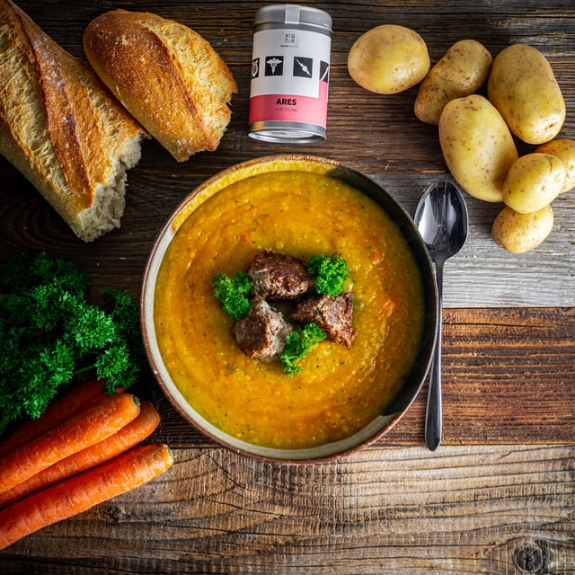

Cream of Potato Soup

Description
Perfect soup for potato lovers! Your kids will love it!
Ingredients
- 3 medium sized potatoes
- 2 slices onion
- 2 tbsp. butter
- 2 tbsp. flour
- 1½ tsp. salt
- ⅛ tsp. pepper
- ¼ tsp. celery salt
- 2 cups Carnation Milk
- 2 cups potato water
- 1 tbsp. chopped parsley
Steps
- Cut potatoes in small pieces and cook with onion in boiling salted water until tender—use 3 cups of water and ½ teaspoon salt.
- Drain (saving the potato water) and rub the potatoes through a sieve.
- There should be about 2 cups of potato pulp.
- Make a white sauce of the butter, flour, seasonings, Carnation, and potato water.
- Reheat in the double boiler. Sprinkle with chopped parsley and serve very hot.
- Serves 6.
From the book of : My Hundred Favorite Recipes, by Mary Blake
Check out for the other recipes from the book